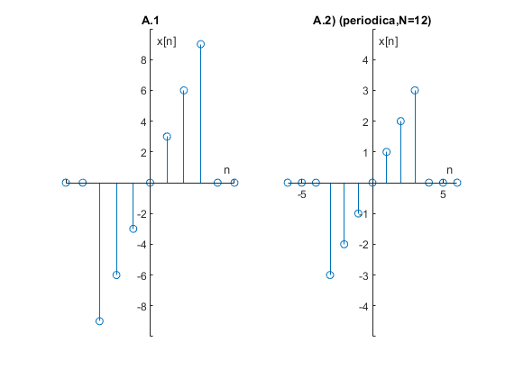

Contents
Ejercicio 4
3.1-1 Find the energy of the signals depicted in Fig. A.1)
3.1-2 Find the power of the signals illustrated in Fig. A.2)
subplot(1,2,1) x=@(n) 3*n.*(heaviside(n+3)-heaviside(n-4)); n=-10:10; sympref('HeavisideAtOrigin',1); stem(n,x(n)) axis([-5 5 -10 10]) ax = gca; ax.XAxisLocation = 'origin'; ax.YAxisLocation = 'origin'; ax.Box = 'off'; title('A.1') xlabel('n') ylabel('x[n]') subplot(1,2,2) y=@(n) n.*(heaviside(n+3)-heaviside(n-4)); sympref('HeavisideAtOrigin',1); stem(n,y(n)) axis([-6 6 -5 5]) ax = gca; ax.XAxisLocation = 'origin'; ax.YAxisLocation = 'origin'; ax.Box = 'off'; title('A.2) (periodica,N=12)') xlabel('n') ylabel('x[n]')
Procedimiento
3.1-1 Energia
E=0; for n=n sum=x(n)^2; E=E+sum; end fprintf('La energia es:%d',E);
La energia es:252
3.1-2 Potencia
P=0; N=12; for n=-6:N-1 sum=(1/N)*y(n)^2; P=P+sum; end fprintf('La Potencia es:%d',P);
La Potencia es:2.333333e+00